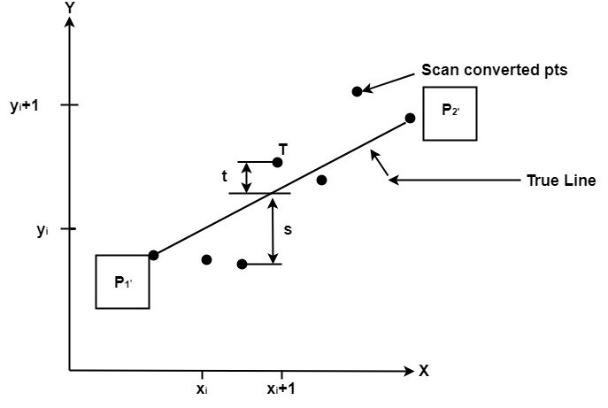

Computer Graphics
This algorithm is used to scan and convert a line. Bresenham developed it. It is an efficient method because it only requires integer addition, subtraction,and multiplication operations. These operations are very fast, allowing lines to be generated quickly. In this method, the next pixel selected is the one with the shortest distance from the true line.

The method works as follows:
Assume a pixel P1'(x1',y1'),then select subsequent pixels as we work our may to the night, one pixel position at a time in the horizontal direction toward P2'(x2',y2').